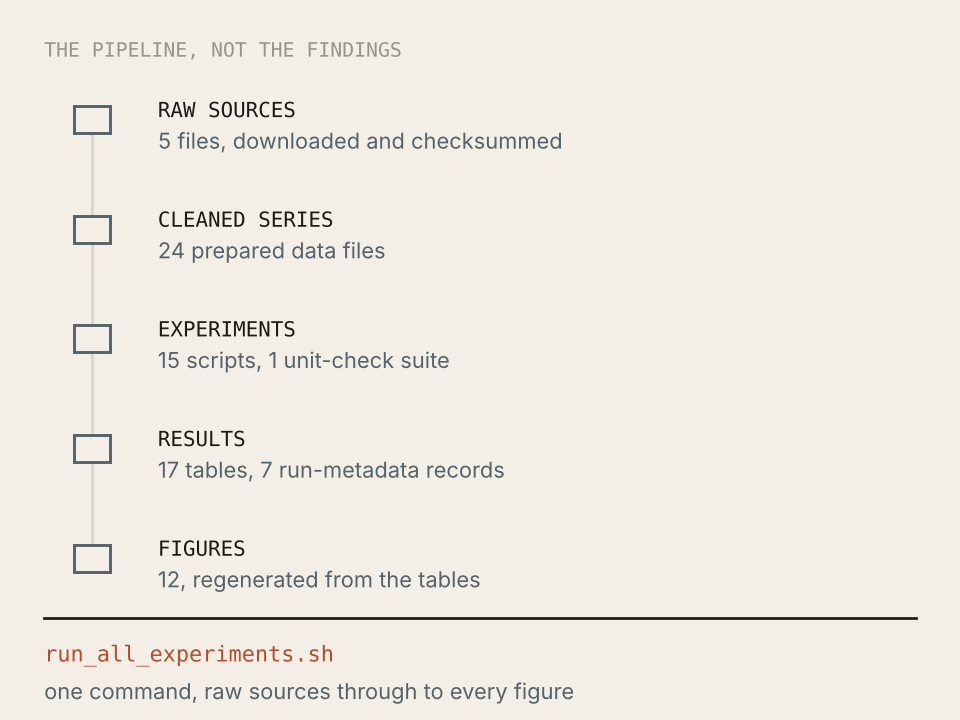

Project 03 of 06
IB Mathematics Extended Essay · May 2027 session
Held back until the essay is marked
This one is an IB assessment that has not been submitted yet. Until the May 2027 session closes, the question, the derivations and every number stay off this site. What follows is the shape of the work, and nothing from inside it.
The shape of it
It is a mathematics essay about measurement, which is what most of this notebook turns out to be about. I take a quantity that can be computed exactly under an idealised model, derive what it should be, and then go looking for the conditions under which that derivation stops describing anything real.
The work splits in two. The first half is pen and paper: definitions, a handful of theorems, and one statement I could not prove and have labelled as a conjecture rather than quietly rounding up to a result. The second half is a reproducible experiment pipeline that tests the algebra against data, written so that one command regenerates every figure in the essay from the raw inputs.

The validation is deliberately built to fail somewhere. It runs in stages, starting from data that satisfies the assumptions exactly and ending on a dataset chosen because it violates one of them badly. A paper that only reports the cases where its method works has not told the reader where the method ends, and the stage that breaks it is the one I would want a reader to look at first.
Why the page is empty
IB coursework is checked for originality against published sources, and a public page is a published source. If the essay's own content sat here, the similarity check would find the essay matching this site, which is a problem I would rather not have to explain to a coordinator. So it comes down until the session is over.
After the May 2027 results are released this page gets the full version: the question, the derivation, the conjecture, the validation stages and the figures. If you are reading this before then and want to see the work, ask and I can send it directly.